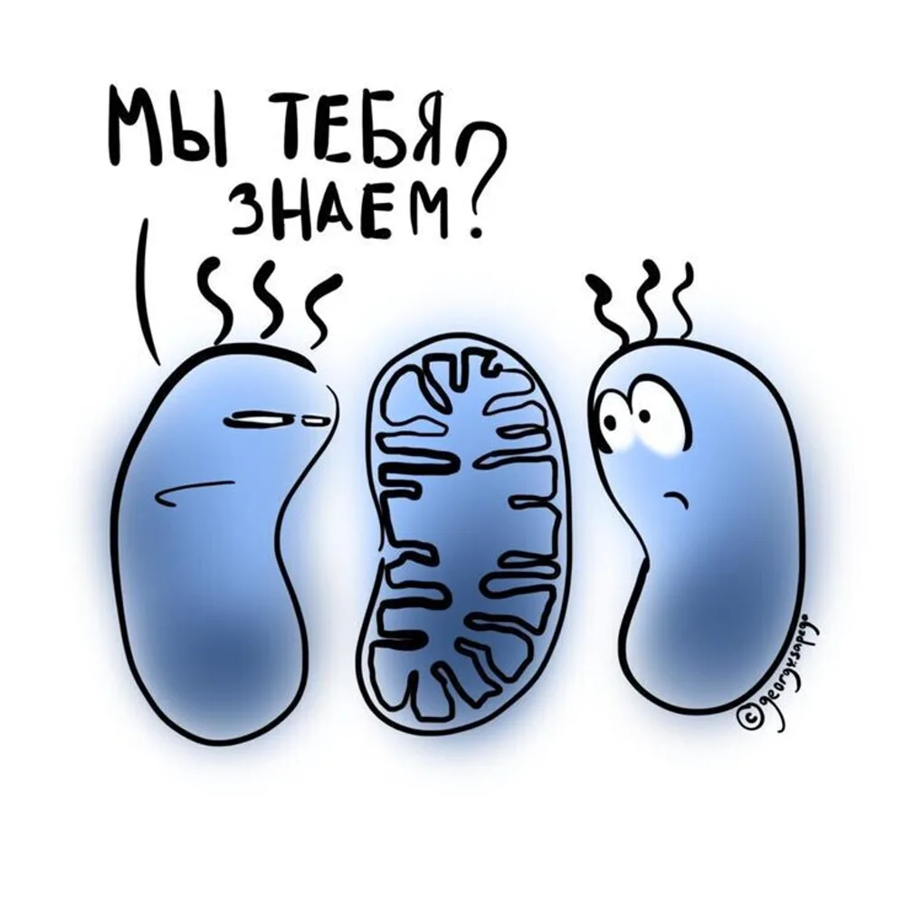

ФМТ при СРК и ожирении: где работает, а где нет



При рецидивирующей CDI ФМТ эффективна до 90%. Но вокруг метода много шума. Где доказательства, а где пока только надежды?
Воспалительные заболевания кишечника
Данные по язвенному колиту и болезни Крона противоречивы. У части пациентов с язвенным колитом ФМТ может помочь, особенно при использовании материала от нескольких доноров и доставке через нижние отделы. Но единого протокола нет.
Синдром раздражённого кишечника
Систематический обзор 2023 года (470 пациентов, 7 исследований): в целом ФМТ не превосходит плацебо при СРК. Но способ доставки решает: через верхние отделы ЖКТ — хорошие результаты, капсулы и колоноскопия — нет.
Ожирение
Теоретически микробиота влияет на извлечение энергии из пищи, синтез жирных кислот и воспаление. Но небольшие исследования дали противоречивые результаты. ФМТ при ожирении пока остаётся экспериментальным направлением.
Коротко
- Рецидивирующая CDI — работает отлично.
- Язвенный колит — может работать у части пациентов.
- СРК — только при определённом способе доставки.
- Ожирение — пока эксперимент.
Ваш врач Гондусов Д.В. 

Статья носит информационный характер и не заменяет консультацию врача. Не занимайтесь самодиагностикой.